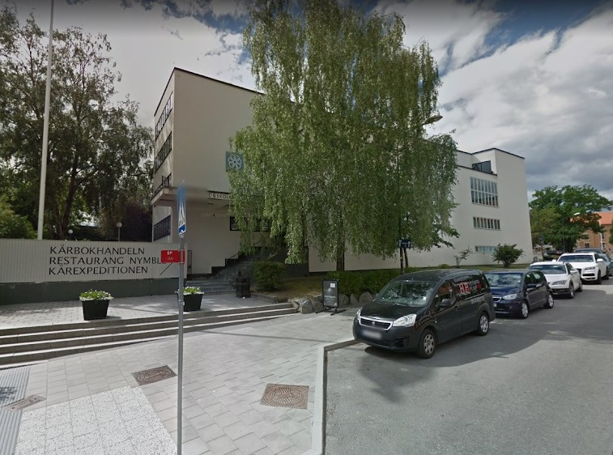

Prese visit the registration form to register your attendance to SIGDIAL2019 conference.
ISCA is offering student travel grants. We encourage students to apply for these.
The Venue is located in the Student Union building (THS) at KTH. Once you reach KTH, there will be signs to help you find it.

We have prepared a map showing where the Venue is located, as well as some other important locations, which you can find here.
For information about Visa when travelling to Sweden, please see the webpage of Swedish Migration Agency.
During the registration process, you can state that you need a Visa invitation letter. You will then be sent a letter to the provided email address within a couple of days.
For information about how to get to the city centre from the airport, see Visit Stockholm. The page doesn't mention Uber, which is another option and costs 489 SEK (actually only slightly less than a regular taxi).
The busses and subway in Stockholm are operated by "SL". To buy tickets, see information on the different options here. Note that you cannot buy a ticket with cash or credit card onboard buses. You will need SL Access credit or a mobile ticket. The latter can be bought through the SL smartphone app (where you can connect your credit card).
The Vasa museum is beautifully located on Djurgarden (see the map). You can get their from the Venue either buy walking, taking the bus or an Uber (which might be a good option if you ride together).
The walk is quite nice, but is about 3 kilometers. You can for example take the route suggested on the map, during which you will see parts of the city centre and its location near the water:
If you want to take the bus, bus 67 (towards Skansen) leaves every 15 minutes from "Ostra station" (see the map for its location). There is a bus stop close to the museum called "Nordiska museet/Vasamuseet" where you get off. Note again that you cannot buy the ticket on the Bus, so this has to be bought in advance (e.g. through the SL app). See the information about local transportation above.
The easiest way to find accommodation is through Booking.com, Airbnb, or Hotels.com.
For information about what else to see in Stockholm while you are there, see for example Visit Stockholm.